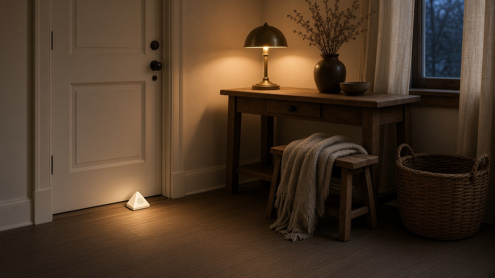
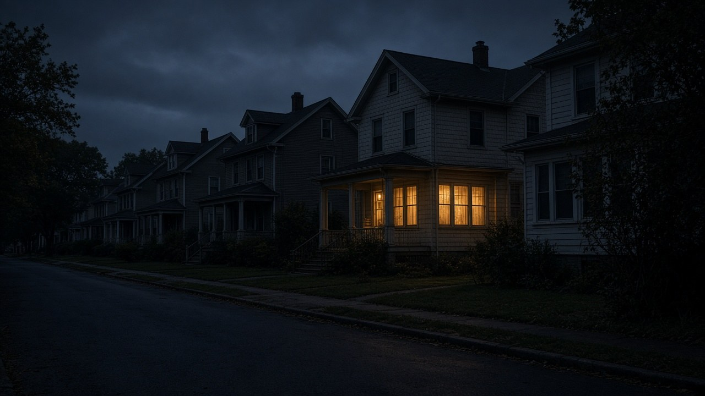

Mission Darkness Faraday phone bag, 2-pack
A slim pouch for phones and key fobs when you want a quiet evening offline.
Inspired by: Silo farmhouse · bunker lodge
View on AmazonInspired by this look
Soft power and quiet privacy pieces inspired by Lock & Linen concept homes — especially the farmhouse-over-silo that readers keep coming back to. These are similar products, not the exact items in the AI renders. Nothing here is a real listing or a security-performance guarantee.


Some links on this page are Amazon affiliate links. We may earn a commission at no extra cost to you.
Privacy & signal
Quiet ways to set a phone down for the evening — no performance claims, just the look of a calmer room.
A slim pouch for phones and key fobs when you want a quiet evening offline.
Inspired by: Silo farmhouse · bunker lodge
View on Amazon
Top-grain leather sleeve for the entry table — soft finish, magnetic close.
Inspired by: Cliffside · silo entry
View on AmazonWindow & glass
Clear film and soft drapery inspired by the glass in these concept homes — similar products, not the exact rooms.

Clear interior film for glass — inspired by the farmhouse windows upstairs.
Inspired by: Silo farmhouse · cliffside glass
View on Amazon
Soft beige panels that darken a bedroom without looking technical.
Inspired by: Bunker lodge · glacier · silo
View on Amazon
A small aluminum thumb-screw clamp that sits on a sliding window’s track.
Inspired by: Field Notes — Closed Up for the Evening
View on Amazon
A small hinged stop in antique brass, made for wood double-hung windows.
Inspired by: Field Notes — Closed Up for the Evening
View on Amazon
A static-cling frosted film that goes on with water and peels off without residue.
Inspired by: Field Notes — Closed Up for the Evening
View on AmazonPower-out kit
A small shelf of quiet backup power and light, ready if the grid goes dark for a while. Read the power guide.

Sand-toned MagSafe power bank that sits on a side table like a pebble.
Inspired by: Cliffside · silo living
View on Amazon
Crank + solar radio with flashlight for the pantry shelf.
Inspired by: Silo pantry · bunker · glacier
View on Amazon
Compact neutral power unit tucked beside the stove.
Inspired by: Cliffside · bunker
View on Amazon
A collapsible solar lantern that folds flat for a drawer or a travel bag.
Inspired by: Island · marsh · silo pantry
View on Amazon
A 20,100 mAh everyday bank with USB-C, for a laptop as well as a phone.
Inspired by: Field Notes — When the Grid Goes Dark
View on Amazon
The same everyday-bank idea, a little larger, at 26,250 mAh.
Inspired by: Field Notes — When the Grid Goes Dark
View on Amazon
A 1,024 watt-hour home-backup station with AC outlets, not expandable.
Inspired by: Field Notes — When the Grid Goes Dark
View on Amazon
A larger home-backup station, 2,042 watt-hours, also not expandable.
Inspired by: Field Notes — When the Grid Goes Dark
View on Amazon
A 1,024 watt-hour home-backup station that can take added EcoFlow batteries.
Inspired by: Field Notes — When the Grid Goes Dark
View on Amazon
A 2,048 watt-hour station that can expand with a matching battery, sold as the station-only set.
Inspired by: Field Notes — When the Grid Goes Dark
View on AmazonEntry & doors
Simple door hardware and alerts — no monthly fees, no lock-picking tools, nothing theatrical.

A small travel lock that slips over the latch when you want a bedroom or suite door a little quieter.
Inspired by: Cliffside · island · treehouse
View on Amazon
A powder-coated steel bar that braces an inward-swinging door from the inside.
Inspired by: Bunker lodge · silo farmhouse
View on Amazon
A dual-camera doorbell with on-device storage and no monthly subscription.
Inspired by: Cliffside · mountain homestead
View on Amazon
A fingerprint deadbolt managed in the eufy app — no monthly fee.
Inspired by: Cliffside · canyon homestead
View on Amazon
Simple magnetic sensors with a chime or alarm switch, and no app to install.
Inspired by: Marsh stilt · lighthouse
View on Amazon
A floor wedge with a built-in siren, for a door you want to hear if it moves.
Inspired by: Field Notes — Closed Up for the Evening
View on AmazonCozy linen & light
Warm light, washed flax, and wool — the soft layer that makes a fortified room still feel like a home.

Warm 2700K bedside light with no cord to hide.
Inspired by: Cliffside · fjord
View on Amazon
Drum-shade lamp for the reading nook.
Inspired by: Cliffside
View on Amazon
Brass and leather lantern that glows like candlelight.
Inspired by: Cliffside · mountain
View on Amazon
A collapsible candle lantern with a glass chimney and a spare-candle pack.
Inspired by: Fjord · mountain · glacier
View on Amazon
Moving-flame pillars for the timber hearth.
Inspired by: Cliffside · silo
View on Amazon
Bedside table with power built in — cords disappear into the grain.
Inspired by: Cliffside bedroom
View on Amazon
A washed French-flax sheet set in a quiet solid, for lofts and lake beds.
Inspired by: Island · cliffside · treehouse
View on Amazon
A machine-washable wool throw, made in the USA, for the sofa or the loft.
Inspired by: Glacier · fjord · black A-frame
View on Amazon
Long ivory sheepskin draped by the stove.
Inspired by: Cliffside · fjord · glacier
View on AmazonEmergency water & first aid
A quiet pantry shelf: drinking water, a compact kit, and a box for the papers you would want after a fire or a flood.

A personal filter straw for hiking, travel, and the emergency shelf.
Inspired by: Island · marsh · lighthouse
View on Amazon
A compact first-aid kit for the pantry or the car.
Inspired by: Silo pantry · bunker
View on Amazon
A fire-resistant document box with a key lock, for passports and papers.
Inspired by: Silo farmhouse · cave dwelling
View on AmazonFurther down this page
Field Notes posts Products from Field Notes Prolonged-blackout checklist
Field Notes
Every Field Notes piece that is public now, newest first.
From Field Notes
Pieces we have written about in the public Field Notes, grouped by article. Items already in the showcase above are pointed to rather than repeated. When the same piece appears in more than one note, it is shown once.
One Roof on the Grassland, and the Whole Sky for a Yard

A handmade clay jug from Cappadocia, Turkey, with a stopper and a small saucer.
Featured in One Roof on the Grassland, and the Whole Sky for a Yard
View on Amazon
Ramie and cotton covers with a flange edge, the colour of dry grass; inserts not included.
Featured in One Roof on the Grassland, and the Whole Sky for a Yard
View on Amazon
Sixty percent jute and forty percent cotton, hand-woven in India; the listing recommends a rug pad.
Featured in One Roof on the Grassland, and the Whole Sky for a Yard
View on AmazonA Bath in the Woods, and the House Built Around It

A low stool of Japanese cypress for washing before the soak, the way a Japanese bath is used.
Featured in A Bath in the Woods, and the House Built Around It
View on Amazon
A tall oval rice-paper shade on a slim metal frame, with a foot switch; bulbs not included.
Featured in A Bath in the Woods, and the House Built Around It
View on AmazonA House at the End of a Lavender Field

Flax linen in a natural tone; the listing sizes it for a 6-foot table seating 10 to 12.
Featured in A House at the End of a Lavender Field
View on Amazon
Hand-blown clear glass on a short stem, for a pillar candle on an outdoor table.
Featured in A House at the End of a Lavender Field
View on Amazon
Warm Edison-style bulbs on an outdoor-rated, dimmable string; the listing states IP65 and UL.
Featured in A House at the End of a Lavender Field
View on AmazonA Quiet Look at the Door

A plug-in 2.5K camera the listing rates IP65 for indoor or outdoor use, with an operating range of −4 °F to 113 °F (−20 °C to 45 °C). Local recording uses a microSD card, sold separately.
Featured in A Quiet Look at the Door
View on Amazon
A wired indoor camera. The listing states 2K HDR video, night vision, and two-way audio. Some of the listing’s extra alerts require a Google Home Premium subscription.
Featured in A Quiet Look at the Door
View on Amazon
A wire-free outdoor camera with a solar panel. The listing states 2K video, 8 GB of built-in local storage, and no monthly fee. The “three hours of sunlight” figure is the maker’s, not a winter promise.
Featured in A Quiet Look at the Door
View on Amazon
Adjustable tilt brackets the listing says fit Renogy 100 W N-type panels on a flat surface, so a stationary array can be set at a chosen angle.
Featured in A Quiet Share of the Sun
View on Amazon
A 256 Wh portable station. The listing describes LFP (LiFePO4) cells and a BMS that monitors temperature. EcoFlow’s published specs for this model state charging between 0 °C and 45 °C (32 °F and 113 °F).
Featured in A Quiet Share of the Sun
View on Amazon
A rigid 100 W monocrystalline (N-type) panel for a 12 V cabin or RV array, with pre-drilled mounting holes. It is a single panel, not a complete kit.
Featured in A Quiet Share of the Sun
View on Amazon
A 20 A MPPT controller for 12 V or 24 V banks. The listing says lead-acid types are auto-detected and lithium is a manual setting.
Featured in A Quiet Share of the Sun
View on Amazon
A folding 200 W panel meant to charge a portable station, not a household outlet. The listing states an operating range of −4 °F to 149 °F (−20 °C to 65 °C).
Featured in A Quiet Share of the Sun
View on Amazon
A flexible 100 W CIGS thin-film panel with pre-punched holes, for an irregular or weight-limited surface, as the listing describes.
Featured in A Quiet Share of the Sun
View on AmazonThe Quiet Pantry

A gravity rack for up to 54 cans: load at the top, take the oldest from the bottom.
Featured in The Quiet Pantry
View on Amazon
Two rolls of 1 × 3 inch write-on labels with Date and Contents lines.
Featured in The Quiet Pantry
View on Amazon
Two 4.4 qt push-button containers sized for 5 lb bags of flour or sugar.
Featured in The Quiet Pantry
View on Amazon
30 heat-sealable 1-gallon bags, 30 oxygen absorbers (400cc each) and 30 labels.
Featured in The Quiet Pantry
View on Amazon
Six black 5-gallon buckets with snap-on lids, listed as food-grade and BPA-free.
Featured in The Quiet Pantry
View on Amazon
A two-part screw-on lid listed to fit standard 3.5 to 7 gallon buckets.
Featured in The Quiet Pantry
View on AmazonA Door You Don't Own
Already in the showcase above : Addalock portable door lock, Buddybar Door Jammer, UltraPro window and door alarm.
What's in the Glass

The Elite (OB06) pitcher filter, rated for 120 gallons.
Featured in What's in the Glass
View on Amazon
Under-sink system with its own faucet, in brushed nickel.
Featured in What's in the Glass
View on Amazon
The genuine replacement set for the AQ-6300M.
Featured in What's in the Glass
View on Amazon
A tankless under-sink reverse-osmosis system.
Featured in What's in the Glass
View on Amazon
A countertop reverse-osmosis purifier; no plumbing required.
Featured in What's in the Glass
View on AmazonClosed Up for the Evening
Already in the showcase above : Addalock portable door lock, Buddybar door security bar, SABRE wedge door stop alarm, Prime-Line sliding window security lock, Prime-Line U 9929 window flip lock, UltraPro window and door alarm, 2-pack, rabbitgoo frosted glass privacy film.
8-mil clear film, 36 in × 12 ft.
Featured in Closed Up for the Evening
View on AmazonWhen the Grid Goes Dark
Already in the showcase above : Twelve South PowerCapsule 10K, Anker Prime 20,100 mAh, 220W, DaranEner 600W / 288Wh, EcoFlow DELTA 3 Plus, Anker Prime 26,250 mAh, 300W, Jackery Explorer 1000 v2, Jackery Explorer 2000 v2, Anker SOLIX C2000 Gen 2.
At home
A longer outage is easier to meet calmly when a few quiet supplies are already in the house. The Government of Canada’s emergency kit checklist is a good place to start: be ready to look after yourself for at least 72 hours, and add more supplies if you can, in case it lasts longer. What follows is a practical list for a longer outage at home. Where we already write about a piece, or already show it in the showcase above, we point you to it. The rest are ordinary household items — not a new shopping list.